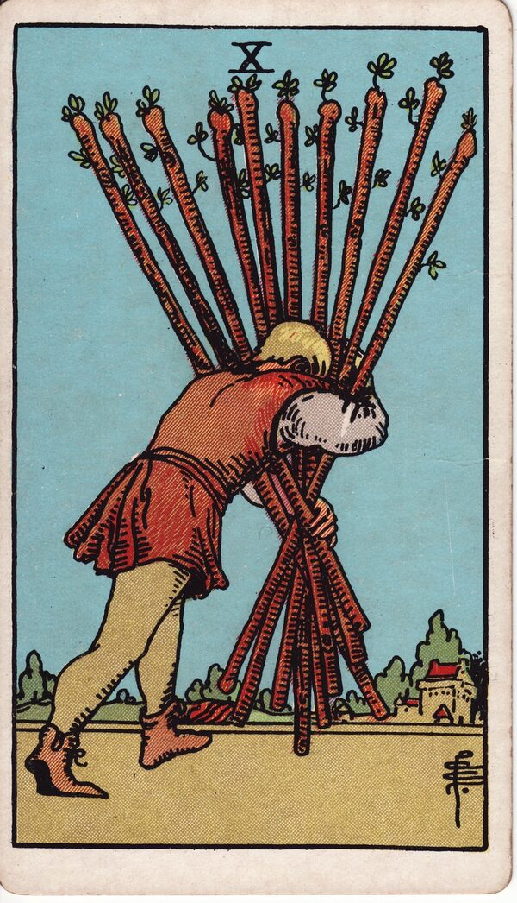

Minor Arcana · Suit of Wands
Ten of Wands Tarot Card Meaning
The Ten of Wands is the weight of carrying it all — burden, overload, and time to put something down. Want to know what it means in your spread? Every reader on our line is hand-vetted — connect in under 60 seconds, $1 for your first minute, hang up anytime.
- Hand-vetted readers
- Available 24/7
- Hang up anytime

Ten of Wands — What It Shows
A figure bends under the weight of all ten wands, carrying them in an awkward bundle toward a town in the distance. He can barely see where he's going. The goal is close, but the load has become the whole experience. The Wands story that began as a single bright spark in the Ace has, by the Ten, become more than one person should carry.
Ten of Wands Upright Meaning
Upright, the Ten of Wands is burden, responsibility, and overextension. You've taken on too much — sometimes from ambition, sometimes from refusing to delegate or say no. Success may be near, but the card asks: is this weight necessary, and how much of it is even yours to carry?
Ten of Wands Reversed Meaning
Reversed, it can be relief — putting the load down, delegating, releasing what isn't yours. Less positively, it's collapse: carrying until something breaks, or refusing help until burnout forces the issue.
Ten of Wands in Love & Relationships
In love, the Ten of Wands is a relationship that's become heavy — one-sided effort, duty over joy, or carrying the emotional labour alone. Example: a caller exhausted by "doing everything" in her marriage drew this card; the read named the imbalance directly and focused on what could be shared or set down before resentment hardened.
Ten of Wands in Career & Money
For work it's overload — too many responsibilities, no delegation, success that costs more than it gives. Example: someone close to a big professional goal but running on empty pulled this card; the message was that finishing matters less than finishing without burning out — offload what you can.
Ten of Wands as Advice
As advice: put something down. Delegate, ask for help, drop what isn't yours, and question whether the goal is worth the way you're carrying it.
What People Ask About the Ten of Wands
Common questions readers hear about this card:
"Does it mean I'm doing too much?"
Almost always — overload is the card's core message.
"Ten of Wands as feelings?"
Burdened, obligated, 'this has become hard work' rather than joyful.
"Is the goal still worth it?"
The card asks exactly that — sometimes yes, but not carried this way.
"Reversed — is that good?"
Often relief and release, though it can also be collapse. Context decides.
Ten of Wands — Yes or No?
Leans no, or "yes, but at a heavy cost." Reversed can shift toward yes once the load is released.
Ten of Wands in a Tarot Reading
A meanings page is the map; a live reading is the territory. The Ten of Wands shifts with its position and the cards around it — which is what a hand-vetted reader interprets for your question. See the full Suit of Wands, all 56 cards on the Minor Arcana hub, or start a phone tarot reading.
← Nine of Wands · Next: Page of Wands →
What Does the Ten of Wands Mean for You?
A meanings list is the map; a live reading is the territory. We'll connect you with the right hand-vetted tarot reader in under 60 seconds. $1/min first call · 15 minutes for $10 · hang up anytime · 100% satisfaction promise.
Call (888) 920-6662 NowTen of Wands — Frequently Asked Questions
What does the Ten of Wands mean?
Burden and overload — carrying too much, often alone, near the goal.
What does it mean reversed?
Releasing the burden and delegating — or collapse from never putting it down.
What does the Ten of Wands mean in love?
A relationship that's become heavy work or one-sided effort.
Is it a yes or no card?
Leans no, or "yes but at a heavy cost."
How much does a reading cost?
First-time callers pay $1/min, or 15 minutes for $10, and you can hang up anytime.
Get Your Tarot Reading Now
Connected to a hand-vetted reader in under 60 seconds, the cards pulled on your real question, and you hang up with clarity.
Call (888) 920-6662